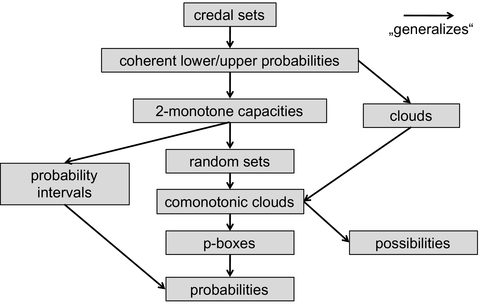
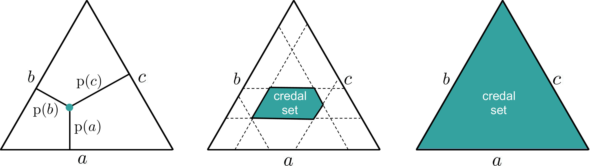
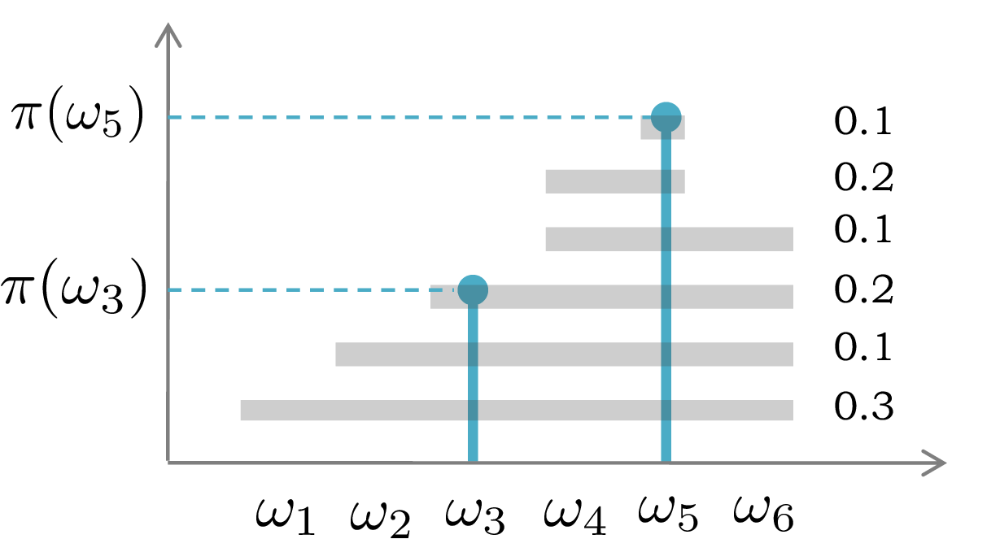

5.4. Set-based versus distributional representations#
5.4.1. Background on uncertainty modeling#
The notion of uncertainty has been studied in various branches of science and scientific disciplines. For a long time, it plays a major role in fields like economics, psychology, and the social sciences, typically in the appearance of applied statistics. Likewise, its importance for artificial intelligence has been recognized very early on[1], at the latest with the emergence of expert systems, which came along with the need for handling inconsistency, incompleteness, imprecision, and vagueness in knowledge representation Kruse et al. [1991]. More recently, the phenomenon of uncertainty has also attracted a lot of attention in engineering, where it is studied under the notion of “uncertainty quantification” Owhadi et al. [2013]; interestingly, a distinction between aleatoric and epistemic uncertainty, very much in line with our machine learning perspective, is also made there.
The contemporary literature on uncertainty is rather broad (cf. Fig. 5.5). In the following, we give a brief overview, specifically focusing on the distinction between set-based and distributional (probabilistic) representations. Against the background of our discussion about aleatoric and epistemic uncertainty, this distinction is arguably important. Roughly speaking, while aleatoric uncertainty is appropriately modeled in terms of probability distributions, one may argue that a set-based approach is more suitable for modeling ignorance and a lack of knowledge, and hence more apt at capturing epistemic uncertainty.
{kind=link}

Fig. 5.5 Various uncertainty calculi and common frameworks for uncertainty representation Destercke et al. [2008]. Most of these formalisms are generalizations of standard probability theory an arrow denotes an “is more general than” relationship#
5.4.2. Sets versus distributions#
A generic way for describing situations of uncertainty is to proceed from an underlying reference set \(\Omega\), sometimes called the frame of discernment Shafer [1976]. This set consists of all hypotheses, or pieces of precise information, that ought to be distinguished in the current context. Thus, the elements \(\omega \in \Omega\) are exhaustive and mutually exclusive, and one of them, \(\omega^*\), corresponds to the truth. For example, \(\Omega = \{ H, T \}\) in the case of coin tossing, \(\Omega = \{ \text{win}, \text{loss}, \text{tie} \}\) in predicting the outcome of a football match, or \(\Omega = \mathbb{R} \times \mathbb{R}_+\) in the estimation of the parameters (expected value and standar deviation) of a normal distribution from data. For ease of exposition and to avoid measure-theoretic complications, we will subsequently assume that \(\Omega\) is a discrete (finite or countable) set.
As an aside, we note that the assumption of exhaustiveness of \(\Omega\) could be relaxed. In a classification problem in machine learning, for example, not all possible classes might be known beforehand, or new classes may emerge in the course of time(Hendrycks and Gimpel [2017]; Liang et al. [2018]; DeVries and Taylor [2018]). In the literature, this is often called the “open world assumption”, whereas an exhaustive \(\Omega\) is considered as a “closed world” Deng [2015]. Although this distinction may look technical at first sight, it has important consequences with regard to the representation and processing of uncertain information, which specifically concern the role of the empty set. While the empty set is logically excluded as a valid piece of information under the closed world assumption, it may suggest that the true state \(\omega^*\) is outside \(\Omega\) under the open world assumption.
There are two basic ways for expressing uncertain information about \(\omega^*\), namely, in terms of subsets and in terms of distributions. A subset \(C \subseteq \Omega\) corresponds to a constraint suggesting that \(\omega^* \in C\). Thus, information or knowledge[2] expressed in this way distinguishes between values that are (at least provisionally) considered possible and those that are definitely excluded. As suggested by common examples such as specifying incomplete information about a numerical quantity in terms of an interval \(C= [l,u]\), a set-based representation is appropriate for capturing uncertainty in the sense of imprecision.
Going beyond this rough dichotomy, a distribution assigns a weight \(p(\omega)\) to each element \(\omega\), which can generally be understood as a degree of belief. At first sight, this appears to be a proper generalization of the set-based approach. Indeed, without any constraints on the weights, each subset \(C\) can be characterized in terms of its indicator function \(\mathbb{I}_C\) on \(\Omega\) (which is a specific distribution assigning a weight of 1 to each \(\omega \in C\) and 0 to all \(\omega \not\in \Omega\)). However, for the specifically important case of probability distributions, this view is actually not valid.
First, probability distributions need to obey a normalization constraint. In particular, a probability distribution requires the weights to be nonnegative and integrate to 1. A corresponding probability measure on \(\Omega\) is a set-function \(\Prob: \, 2^\Omega \longrightarrow [0,1]\) such that \(\Prob(\emptyset) = 0\), \(\Prob(\Omega)=1\), and
for all disjoint sets (events) \(A, B \subseteq \Omega\). With \(\prob(\omega) = \Prob(\{ \omega \})\) for all \(\omega \in \Omega\) it follows that \(\Prob(A) = \sum_{\omega \in A} \prob(\omega)\), and hence \(\sum_{\omega \in \Omega} \prob(\omega)=1\). Since the set-based approach does not (need to) satify this constraint, it is no longer a special case.
Second, in addition to the question of how information is represented, it is of course important to ask how the information is processed. In this regard, the probabilistic calculus differs fundamentally from constraint-based (set-based) information processing. The characteristic property of probability is its additivity (5.10), suggesting that the belief in the disjunction (union) of two (disjoint) events \(A\) and \(B\) is the sum of the belief in either of them. In contrast to this, the set-based approach is more in line with a logical interpretation and calculus. Interpreting a constraint \(C\) as a logical proposition \((\omega \in C)\), an event \(A \subseteq \Omega\) is possible as soon as \(A \cap C \neq \emptyset\) and impossible otherwise. Thus, the information \((\omega \in C)\) can be associated with a set-function \(\Pi:\, 2^\Omega \longrightarrow \{ 0, 1 \}\) such that \(\Pi(A) = \llbracket A \cap C \neq \emptyset \rrbracket\). Obviously, this set-function satisfies \(\Pi(\emptyset) = 0\), \(\Pi(\Omega) = 1\), and
Thus, \(\Pi\) is “maxitive” instead of additive (Shilkret [1971];Dubois [2006]). Roughly speaking, an event \(A\) is evaluated according to its (logical) consistency with a constraint \(C\), whereas in probability theory, an event \(A\) is evaluated in terms of its probability of occurrence. The latter is reflected by the probability mass assigned to \(A\), and requires a comparison of this mass with the mass of other events (since only one outcome \(\omega\) is possible, the elementary events compete with each other). Consequently, the calculus of probability, including rules for combination of information, conditioning, etc., is quite different from the corresponding calculus of constraint-based information processing Dubois [2006].
5.4.3. Sets of distributions#
Given the complementary nature of sets and distributions, and the observation that both have advantages and disadvantages, one may wonder whether the two could not be combined in a meaningful way. Indeed, the argument that a single (probability) distribution is not enough for representing uncertain knowledge is quite prominent in the literature, and many generalized theories of uncertainty can be considered as a combination of that kind (;Walley [1991];Shafer [1976];Smets and Kennes [1994]).
Since we are specifically interested in aleatoric and epistemic uncertainty, and since these two types of uncertainty are reasonably captured in terms of sets and probability distributions, respectively, a natural idea is to consider sets of probability distributions. In the literature on imprecise probability, these are also called credal sets (Cozman [2000];Zaffalon [2002]). An illustration is given in cf. Fig. 5.6, where probability distributions on \(\Omega = \{ a,b,c \}\) are represented as points in a Barycentric coordinate systems. A credal set then corresponds to a subset of such points, suggesting a lack of knowledge about the true distribution but restricting it in terms of a set of possible candidates.
{kind=link}

Fig. 5.6 Probability distributions on \(\Omega = \{ a,b,c \}\) as points in a Barycentric coordinate system: Precise knowledge (left) versus incomplete knowledge (middle) and complete ignorance (right) about the true distribution.#
Credal sets are typically assumed to be convex subsets of the class \(\mathbb{P}\) of all probability distributions on \(\Omega\). Such sets can be specified in different ways, for example in terms of upper and lower bounds on the probabilities \(\Prob(A)\) of events \(A \subseteq \Omega\). A specifically simple approach (albeit of limited expressivity) is the use of so-called possibility distributions and related possibility measures Dubois and Prade [1988]. A possibility distribution is a mapping \(\pi: \, \Omega \longrightarrow [0,1]\), and the associated measure is given by
A measure of that kind can be interpreted as an upper bound, and thus defines a set \(\mathcal{P}\) of dominated probability distributions:
Formally, a possibility measure on \(\Omega\) satisfies \(\Pi(\emptyset)=0\), \(\Pi(\Omega)=1\), and \(\Pi(A \cup B) = \max(\Pi(A), \Pi(B))\) for all \(A, B \subseteq \Omega\). Thus, it generalizes the maxitivity ((5.11)) of sets in the sense that \(\Pi\) is not (necessarily) an indicator function, i.e., \(\Pi(A)\) is in \([0,1]\) and not restricted to \(\{ 0, 1 \}\). A related necessity measure is defined as \(N(A) = 1 - \Pi(\bar{A})\), where \(\bar{A} = \Omega \setminus A\). Thus, an event \(A\) is plausible insofar as the complement of \(A\) is not necessary. Or, stated differently, an event \(A\) necessarily occurs if the complement of \(A\) is not possible.
In a sense, possibility theory combines aspects of both set-based and distributional approaches. In fact, a possibility distribution can be seen as both a generalized set (in which elements can have graded degrees of membership) and a non-additive measure. Just like a probability, it allows for expressing graded degrees of belief (instead of merely distinguishing possible from impossible events), but its calculus is maxitive instead of additive[3]. The dual pair of measures \((N, \Pi)\) allows for expressing ignorance in a proper way, mainly because \(A\) can be declared plausible without declaring \(\bar{A}\) implausible. In particular, \(\Pi(A) \equiv 1\) on \(2^\Omega \setminus \emptyset\) models complete ignorance: Everything is fully plausible, and hence nothing is necessary (\(N(A) = 1 - \Pi(\bar{A}) = 0\) for all \(A\)). A probability measure, on the other hand, is self-dual in the sense that \(\Prob(A) = 1 - \Prob(\bar{A})\). Thus, a probability measure is playing both roles simultaneously, namely the role of the possibility and the role of the necessity measure. Therefore, it is more constrained than a representation \((N, \Pi)\). In a sense, probability and possibility distributions can be seen as two extremes on the scale of uncertainty representations[4].
5.4.4. Distributions of sets#
Sets and distributions can also be combined the other way around, namely in terms of distributions of sets. Formalisms based on this idea include the calculus of random sets (Matheron [1975];Nguyen [1978]) as well as the Dempster-Shafer theory of evidence Shafer [1976].
In evidence theory, uncertain information is again expressed in terms of a dual pair of measures on \(\Omega\), a measure of plausibility and a measure of belief. Both can be derived from an underlying mass function or basic belief assignment \(m:\, 2^\Omega \longrightarrow [0,1]\), for which \(m(\emptyset) = 0\) and \(\sum_{B \subseteq \Omega} m(B) = 1\). Obviously, \(m\) defines a probability distribution on the subsets of \(\Omega\). Thus, instead of a single set or constraint \(C\), like in the set-based approach, we are now dealing with a set of such constraints, each one being assigned a weight \(m(C)\). Each \(C \subseteq \Omega\) such that \(m(C) > 0\) is called a focal element and represents a single piece of evidence (in favor of \(\omega^* \in C\)). Assigning masses to subsets \(C\) instead of single elements \(\omega\) allows for combining randomness and imprecision.
A plausibility and belief function are derived from a mass function \(m\) as follows:
Plausibility (or belief) functions indeed generalize both probability and possibility distributions. A probability distribution is obtained in the case where all focal elements are singleton sets. A possibility measure is obtained as a special case of a plausibility measure (and, correspondingly, a necessity measure as a special case of a belief measure) for a mass function the focal sets of which are nested, i.e., such that \(C_1 \subset C_2 \subset \cdots \subset C_r\). The corresponding possibility distribution is the contour function of the plausibility measure: \(\pi(\omega) = \on{Pl}(\{ \omega\}) := \sum_{C : \, \omega \in C} m(C)\) for all \(\omega \in \Omega\). Thus, \(\pi(\omega)\) can be interpreted as the probability that \(\omega\) is contained in a subset \(C\) that is randomly chosen according to the distribution \(m\) (see Fig. 5.7 for an illustration).
{kind=link}

Fig. 5.7 Possibility distribution as a contour function of a basic belief assignment \(m\) (values assigned to focal sets on the right). In this example, \(\pi(\omega_5)=1\), because \(\omega_5\) is contained in all focal sets, whereas \(\pi(\omega_3)=0.6\).#
Note that we have obtained a possibility distribution in two ways and for two different interpretations, representing a set of distributions as well as a distribution of sets. One concrete way to define a possibility distribution \(\pi\) in a data-driven way, which is specifically interesting in the context of statistical inference, is in terms of the normalized or relative likelihood. Consider the case where \(\omega^*\) is the parameter of a probability distribution, and we are interested in estimating this parameter based on observed data \(\mathcal{D}\); in other words, we are interested in identifying the distribution within the family \(\{ \Prob_\omega \with \omega \in \Omega \}\) from which the data was generated. The likelihood function is then given by \(L(\omega; \mathcal{D}) := \Prob_\omega(\mathcal{D})\), and the normalized likelihood as
This function can be taken as the contour function of a (consonant) plausibility function \(\pi\), i.e., \(\pi(\omega) = L^{n}(\omega; \mathcal{D})\) for all \(\omega \in \Omega\); the focal sets then simply correspond to the confidence intervals that can be extracted from the likelihood function, which are of the form \(C_\alpha = \{ \omega \with L^{n}(\omega; \mathcal{D}) \geq \alpha \}\). This is an interesting illustration of the idea of a distribution of sets: A confidence interval can be seen as a constraint, suggesting that the true parameter is located inside that interval. However, a single (deterministic) constraint is not meaningful, since there is a tradeoff between the correctness and the precision of the constraint. Working with a set of constraints—or, say, a flexible constraint—is a viable alternative.
The normalized likelihood was originally introduced by Shafer [1976], and has been justified axiomatically in the context of statistical inference by Wasserman [1990]. Further arguments in favor of using the relative likelihood as the contour function of a (consonant) plausibility function are provided by Denoeux [2014], who shows that it can be derived from three basic principles: the likelihood principle, compatibility with Bayes’ rule, and the so-called minimal commitment principle. See also Dubois et al. [1997] and Cattaneo [2005] for a discussion of the normalized likelihood in the context of possibility theory.